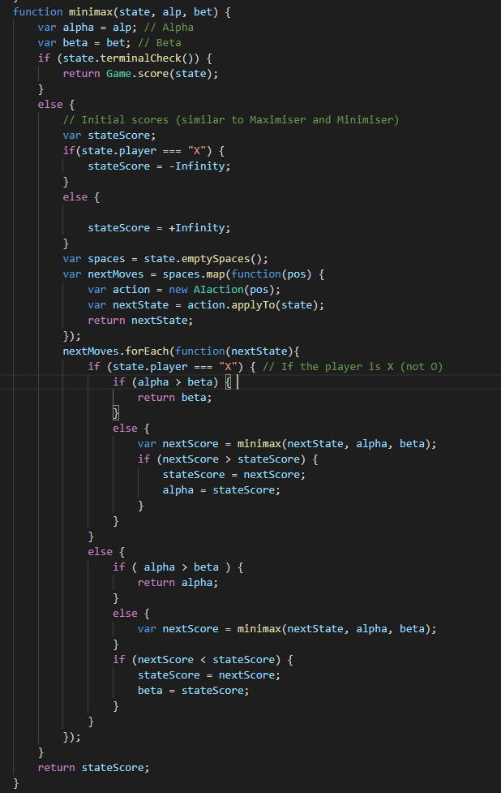

Alpha Beta pruning is a simple optimisation technique which is used to improve the performance of the Minimax algorithm. It does this by reducing the search area of the search tree significantly via use of an "Alpha" and a "Beta". These objects are used in a similar manner to the maximiser and the minmiser in Minimax. The main difference is that they can hold more than one value. If either deem it likely that the subsequent parts of a tree will not return a better outcome than a separate branch, then the current branch is scrapped before it is completely searched.
